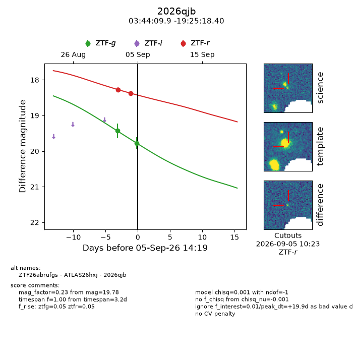
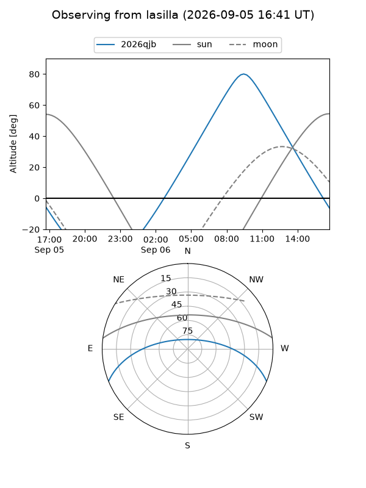
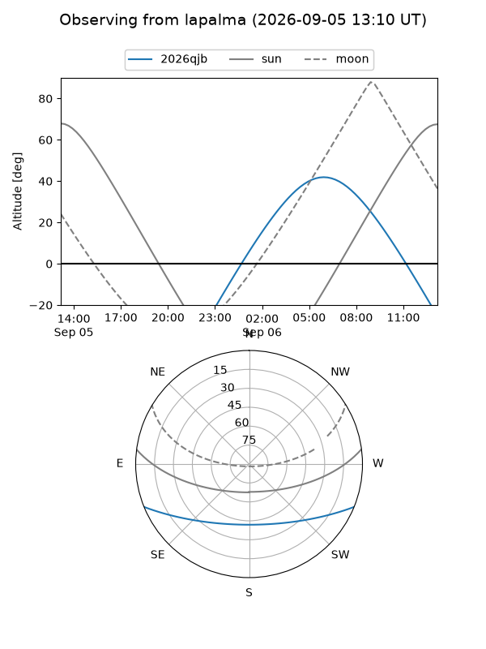
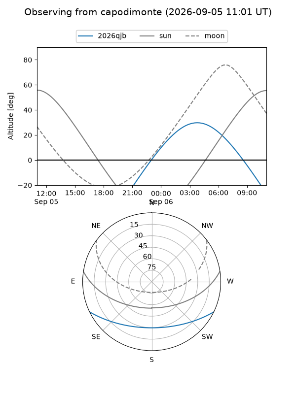
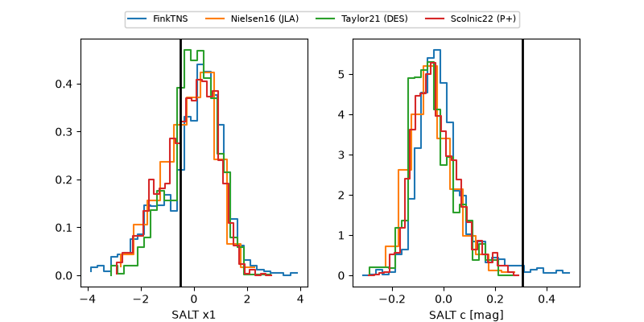

2026qjb
Target 2026qjb at 2026-09-05 14:21
Aliases and brokers:
FINK-ZTF: ztf.fink-portal.org/ZTF26abrufgs
Lasair-ZTF: lasair-ztf.lsst.ac.uk/objects/ZTF26abrufgs
ALeRCE-ZTF: alerce.online/object/ZTF26abrufgs
YSE-PZ: ziggy.ucolick.org/yse/transient_detail/2026qjb
TNS name: wis-tns.org/object/2026qjb
Direct TNS query: direct search
alt names
ZTF26abrufgs (ztf,fink_ztf)
2026qjb (tns,yse)
ATLAS26hxj (atlas)
Coordinates:
equatorial (ra, dec) = 56.0411,-19.42178
equatorial (HMS+DMS) = 03:44:09.86,-19:25:18.40
galactic (l, b) = (211.3663,-49.78826)
Flags:
TNS type: nan
peak dt: +19.9
Photometry:
last ztfg=19.78, ztfr=18.37
2 ztfg, 2 ztfr detections
Lightcurve

Visibility



Additional plots
